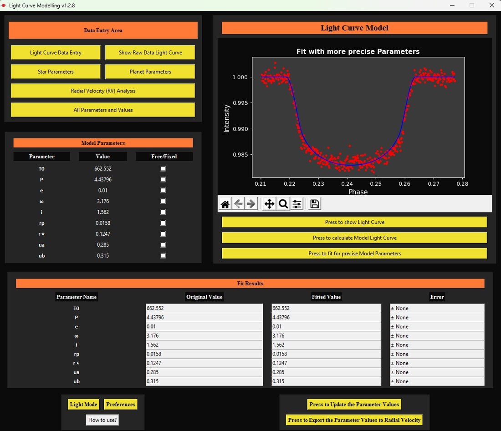

Meet the discoverer
How we found TOI-2431 b with the transit method, radial velocities and imaging from telescopes around the globe.
Data Scientist · Astrophysicist · Python Developer
I turn noisy, complex data into conclusions people can trust. During my MSc, that meant discovering TOI-2431 b, an Earth-sized planet with a 5.4-hour year, as first author of the discovery paper.
TOI-2431 b's orbit · 1 second = 1 hour
Featured research
As first author, I led the discovery and confirmation of one of the shortest-period planets known. It orbits a nearby star so closely that the star's tides stretch it into an almond shape, and it is slowly spiralling inwards.
NASA's TESS satellite flagged a tiny, repeating dip in a nearby star's brightness: the candidate TOI-2431.01.
With two fellow MSc students I wrote an observing proposal for the candidate, secured time on the Mercator Telescope on La Palma and observed for five nights.
Cleaned and combined multi-source time series: space photometry from several TESS sectors and precise radial velocities from the NEID and HPF spectrographs, plus high-contrast imaging.
Fitted the transit and radial-velocity data jointly with MCMC in ExoMUSE, my own Python package. I quantified the uncertainty on every parameter and stress-tested the result with injection–recovery tests.
Confirmed the planet at >5σ and compared it with a catalogue of about 6,000 known planets with 20+ parameters each, showing how extreme it is.
First-author paper with 27 co-authors from international institutes including NASA, published in Astronomy & Astrophysics 707, A238.
Figures from Taş et al. (2026), A&A 707, A238. Click a figure to enlarge.
Our discovery made TOI-2431 b a prime target for follow-up. In 2026 an independent team used the Hubble Space Telescope to detect its secondary eclipse, the first such Hubble detection for a rocky exoplanet. JWST observations are planned. Read the Hubble study
Observing at the Mercator Telescope at the Roque de los Muchachos Observatory.
In the media
National Dutch newspapers, science outlets around the world and the University of Amsterdam covered the story, and I explained the planet on camera for UvA and NOVA.
How we found TOI-2431 b with the transit method, radial velocities and imaging from telescopes around the globe.
Why the star's tidal pull stretches this lava world into a teardrop shape.
With a 5.4-hour orbit, TOI-2431 b is spiralling inwards and will fall into its star in about 31 million years.
Videos load from Instagram when you press play. The “Meet the discoverer” video also appeared on UvA's Facebook and NOVA's TikTok and YouTube.
An in-depth interview about how the discovery happened, in the magazine of the Netherlands Physical Society (NNV).
Read the interview on ntvn.nl Het Parool“UvA master's student discovers an exoplanet during a study project: ‘It's a childhood dream come true’”
Read on parool.nl ADAlgemeen Dagblad, one of the largest newspapers in the Netherlands
Read on ad.nlAnnouncements from the University of Amsterdam and my own posts about the discovery and the prizes.
Awards & honours
My thesis, “ExoMUSE and the Discovery of Ultra-Short Period Planet TOI-2431 b”, won both the national and the institute prize in 2025.
Royal Holland Society of Sciences and Humanities (KHMW)
National prize for the best MSc thesis in astronomy in the Netherlands.
Presented on 24 November 2025, with the laudatio given by Prof. Ewine van Dishoeck.
Anton Pannekoek Institute for Astronomy, University of Amsterdam
Awarded for the best MSc thesis of the year at the University of Amsterdam's astronomy institute.
Projects
From Bayesian inference packages to deep learning, these are open-source Python projects you can explore on GitHub.
A modular Python package for parameter estimation and uncertainty quantification on noisy, high-dimensional data. It's the engine behind the TOI-2431 b discovery.
A convolutional neural network that classifies faces into seven emotions, trained on the FER-2013 dataset of 35,887 images.

An interactive Python tool with a graphical interface for modelling time-series data with regression and validation workflows.
Notebooks from my MSc and BSc: statistical methods, machine learning for physics, computational astrophysics, time-series analysis and more.
Experience & education
Amazon · The Hague, NL
Albert Heijn · Amsterdam, NL
University of Amsterdam & VU Amsterdam
Akdeniz University · Antalya, TR
Skills
About me
“Het is een kinderdroom die uitkomt.”
“It's a childhood dream come true.”
I'm a Physics & Astronomy graduate (cum laude) from the University of Amsterdam and VU Amsterdam. My research taught me to approach problems systematically, extract insight from noisy data and build software that makes analysis faster and more reliable.
Today I work at Amazon as an AI Content Expert, curating and evaluating the data used to train and test large language models. Next, I want to apply data science where it makes a real impact, in a team where I can keep learning new technologies from the ground up.
If you'd like to connect, I'm always happy to chat on LinkedIn or over a coffee.
Contact
I'm open to Data Science and Data Analyst roles in the Netherlands. Get in touch, I'd love to hear what you're working on.
kayahantas07@gmail.com